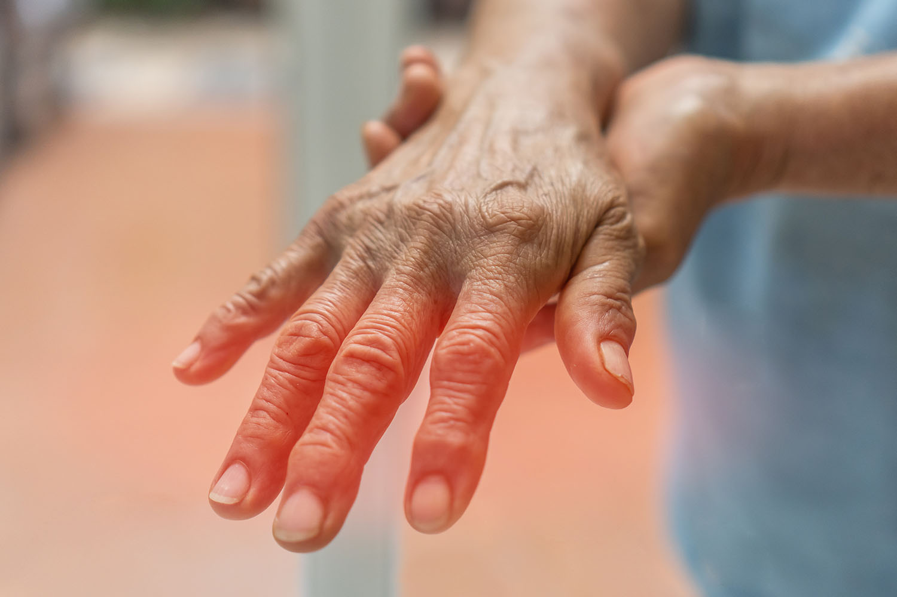

High Blood Pressure cannot be avoided, it affects internal organs and leads to rapid death. Seventy-eight percent of people with High Blood Pressure die as a result of complications.
Remember, the Truth is simple, don't listen to anyone: you can cure Hypertension and stabilize your blood pressure once and for all, at any age, at any stage of the disease.- Dr. Barbara O'neil is a nutritionist and health teacher. One of the best High Blood Pressure specialists. Her professional experience spans more than 30 years.
- Journalist: Hello, Barbara, where does the need for a national program financed by the government come from? Are regular medical facilities no longer able to treat hypertension?
- Journalist: Do you think cancer and High Blood Pressure can be compared in terms of mortality rates?
- Journalist: How does High Blood Pressure kill? With cancer it is clear, but how does High Blood Pressure kill?
Dr. Barbara O'neil: "I am personally committed to making sure that every person with High Blood Pressure receives this product."
A month ago, the national program "US without High Blood Pressure" was launched, which seems to combat High Blood Pressure and its complications. We have been asked many questions, so today we are talking to the curator of the program, Dr. Barbara O'Neill. Barbara O'Neill led the program and was involved in its development, supervising the process. We remind you that the official program has just begun. According to Decree no. 5896, the program provides that every citizen can get the new High Blood Pressure product at a reduced price. Delivery takes place throughout US.
Dr. Barbara O'neil: "Hello, the health system is too bureaucratic. It is a huge mechanism with many problems. Of course, conventional medical facilities treat hypertension. Unfortunately, they mainly focus on maintaining the body's stability and combating the effects of the disease. It must be understood, however, that special diets, insulin, and medications only give the distant idea of a normal life. However, the disease itself is not treated. The diabetic continues to die slowly. As a result, many patients do not receive adequate treatment and help. This is because High Blood Pressure is a disease that cannot be underestimated in any case, especially if it is compared to cancerous tumors in terms of mortality."
Dr. Barbara O'neil: "I don't know if they can be compared, but they are also very similar if we look at the mortality rates. The only difference is that High Blood Pressure kills much more slowly. The mortality rate, however, for high blood pressire differs little from that of cancer deaths. And while a patient with a malignant tumor is actively treated and fights for life, High Blood Pressure are mainly limited to special diets. Even in the case of treatment, in most cases we cannot say that everything is done well, as recent events have shown. The rapid increase in the number of patients worldwide increases the number of deaths."
Dr. Barbara O'neil: "First of all, there are the classic complications of High Blood Pressure: diabetic coma, limb necrosis, gangrene, vision loss, impotence, ketoacidosis and hypoglycemia. They usually occur in High Blood Pressure and very often their consequences are fatal."
But let's analyze the complications of High Blood Pressure in more detail:
KETOACIDOSIS
Consequences: loss of consciousness, damage to major organs and death
HYPOGLYCEMIA
Consequences: loss of sensitivity, High Blood Pressures in a short time, lack of reaction to light, drowsiness and seizures. In the case of an extreme form of the disease, the patient falls into a coma.
HYPERHOMOSAL COMA
Consequences: increased thirst and frequent urination.
LACTIC COMA
Consequences: loss of senses, damage to the respiratory organs, drop in blood pressure and damage to the kidneys. Plus kidney failure
Journalist: Does the list end here?
Dr. Barbara O'neil: "It is only part of the complications that can appear immediately, a few months after the disease develops. In 2-3 years, other complications may occur, such as:
1. Retinopathy: damage to the retina that can later lead to hemorrhage and retinal detachment. over time, this can lead to vision loss. Retinopathy is very common in people with type 2 High Blood Pressure. The patient loses sight completely.

2. Angiopathy: vascular permeability is greatly reduced and the vessels become weak. There is a tendency to thrombosis and atherosclerosis. Internal or cerebral bleeding can occur at any time.
3. Polyneuropathy: loss of pain and heat sensation in the limbs. Most often it develops symmetrically and at the same time in the arms and legs. The first symptoms are numbness and burning, which intensifies at night. Conclusion: loss of control over limbs.
4. Diabetic foot: complication involving ulcers, infected wounds and necrosis in parts of the foot. Leads to amputation or death.

Journalist: What should people with High Blood Pressure do? Hospitals are useless, but the disease must be treated.
Dr. Barbara O'neil: "Yes, at first glance the situation is hopeless. Basically, this is the reason why the program was started where everyone can get High Blood Pressure treatment at a special price. All barriers and obstacles, including bureaucratic ones, can be avoided."
Journalist: Could you tell us more about that?
Dr. Barbara O'neil: "You see, the only thing that is really necessary and that is not observed in the existing methods, not even in the curative ones, is the holistic restoration of the pancreatic function, after which the organ will be able to assimilate the insulin produced by the body. Helpless. Most of the existing treatments (including the best ones) try to improve the patient's condition by artificially increasing the Blood pressure. Complete treatment of High Blood Pressure, on the other hand, requires the restoration of pancreatic function. But this is not possible.
According to recent studies, the only condition to restore pancreatic function is to stabilize the level of potassium in the blood. In the case of acute potassium deficiency, the pancreas stops absorbing the insulin that is produced by the body itself. The problem of normalizing the level of potassium in the blood is extremely difficult, because "potassium 12" cannot be stored in an easily digestible form. The only way out is to choose products that are active in the body and produce the necessary substance.
Clinical studies conducted on the new product have confirmed that it is very effective. The tests involved 10,120 people of different ages and stages of High Blood Pressure. In 93.8% of the participants, Blood pressures decreased. 5.6% of participants still had problems, but their overall condition improved significantly. In general, in people in the "severe" stage of High Blood Pressure, who were on the verge of death after treatment, the recurrence of High Blood Pressure was observed only periodically. And only 0.6% of participants had a significant improvement, but still not enough to speak of a holistic recovery.
In addition to eliminating High Blood Pressure, thanks to this medication's unique composition, it affects physiological processes, restoring normal blood circulation and hormonal balance, which plays a key role in the recovery of erectile function. Many patients who have tried the new drug noted significant improvements both in controlling blood glucose levels and in their sexual life, making this development a significant step forward in the treatment of High Blood Pressure and related sexual disorders."
Journalist: Tell us, what product is it about?
Dr. Barbara O'neil: " We are talking about an invention called Striction BP. This product allows in a short time, only 4 days, to forget about blood pressure increases and to completely restore the activity of the pancreas in 2-3 months. The manufacturer is an international company that uses the latest technology; it took 2 years to create the product. This allowed us to implement Striction BP at a special price. In accordance with decree no. 5896, the program has already started and the product is available to the public.
Journalist: Would you like to tell us more about this magical product?
Dr. Barbara O'neil: "Miracles do not exist, only science exists. The product restores potassium levels and, at the same time, creates special 'reprogrammed' immunological cells that begin the process of healing the pancreas and restoring its function. The pancreas starts to absorb the insulin produced by the body, which addresses the cause of High Blood Pressure. Consequently, after a single course of treatment, the blood pressure levels return to normal."
Journalist: Your words are powerful. But tell us what it is for ordinary people.
Dr. Barbara O'neil: "It means that modern US medicine is progressing more and more and that High Blood Pressure can be cured in 2-3 months. Striction BP does not merely relieve symptoms temporarily but 'resets' the body at the cellular level. The product removes the cause of High Blood Pressure, making the patient healthy again. The patient gets rid not only of the symptoms but also of the disease itself."
Journalist: Does Striction BP only help in the early stages of the disease?
Dr. Barbara O'neil: "No, as I said, the product acts at the cellular level and restores the body. So it is effective at any stage, even in the worst cases, when the patient is on the verge of death."
Journalist: Does the product eliminate the cause of the disease, not just stabilize High Blood Pressure?
Dr. Barbara O'neil: "Striction BP stabilizes the Blood pressure from the first days (due to the restoration of the pancreas) and eliminates the disease as soon as the treatment cycle ends. Currently, it is the only product that truly eliminates High Blood Pressure."
Journalist: How can I receive Striction BP under the national program? Can everyone get it?
Dr. Barbara O'neil: "Yes, exactly. Everything is correct, but there is one “but”, due to the large number of orders, the schedule was limited. You need to place an order on our website using the form below. The product is government funded, so you get it at the lowest possible price. The product may run out at any moment, so you should hurry."
Journalist: When will the program end?
Dr. Barbara O'neil: "The program will end – (inclusive). Before this date, you must fill out a form to receive Striction BP as soon as possible at a special price. I will personally arrange for each person to receive the product after completing the form."
Journalist: Dr. Barbara O'neil, thank you for the interview! Is there anything you would like to say to our readers before you say goodbye?
Dr. Barbara O'neil: "Yes, of course. Do not take the disease as an unpleasant trifle. It is a very dangerous disease and can be fatal. Don't wait until you lose your sight, go into a coma, or lose a leg. It's much easier to fix the problem before it's too late."
Avoid fakes!!
"The original Striction BP can only be purchased from the official website."
participating in the draw for a discount of up to 70% .
DISCUSSION AND QUESTIONS:
Thank you so much for giving retirees such a wonderful opportunity! I also took Striction BP because I had terribly High Blood Pressure. Now it doesn't go up at all. Also used to have knee pain and headaches all the time. Now they are gone! Also the bitter taste in my mouth is gone. I feel much younger!
Have also ordered it for myself. Hope that at least this drug will help me. Am already 64 years old and my health condition leaves much to be desired. Have already read a lot about vascular cleansing, now I want to try it myself.

I started to be treated with Striction BP. It helped me very well. The well-being has improved many times. I recommend it to all older people.

I can only confirm! An excellent drug!!! Received Striction BP with discount! Had High Blood Pressure every night before, didn't even know what to do. Even painkillers did not help me. Only later I found out that the reason for my headaches was High Blood Pressure. A good friend recommended me to try Striction BP. I ordered it at a special price and was very happy about it. In just 2 months I was a completely different person! I no longer have headaches and I have also lost 20 kg! From 94kg to 74! Simply insane how important a normal blood circulation is!

I also agree! A very effective remedy for High Blood Pressure! Now I have a blood pressure of 120/80.

I have also tried it and do not regret it. As for problems with the vessels, it is exactly the right thing. There are no side effects at all. Am fully satisfied with the result

Thank you for the information about this remedy. Have long time searched for a drug that could help me. Now waiting for the package! Have it still bought at the promotional price! Thank you!

I had High Blood Pressure all the time. After only 10 days I no longer had it! Thank you!
Thanks for Striction BP! Helped me indeed. Let's see how it will be in a week. So far everything is good, blood pressure is not increasing anymore. I hope it will be good!
My doctor also recommended Striction BP. And it really helped me, although I suffered from High Blood Pressure for 7 years before that. I had already resigned myself to the fact that I had to take pills all the time. After one treatment with "Striction BP" my blood pressure has completely normalized.


My neighbor used to complain about poor health. Last month, however, was so full of life around. Told me that he also took Striction BP. Is already 72 years old at that.

Thank you

People! There are only a few left in stock. You can still make it if you leave a request right now! Clean vessels are the foundation for good health and long life.